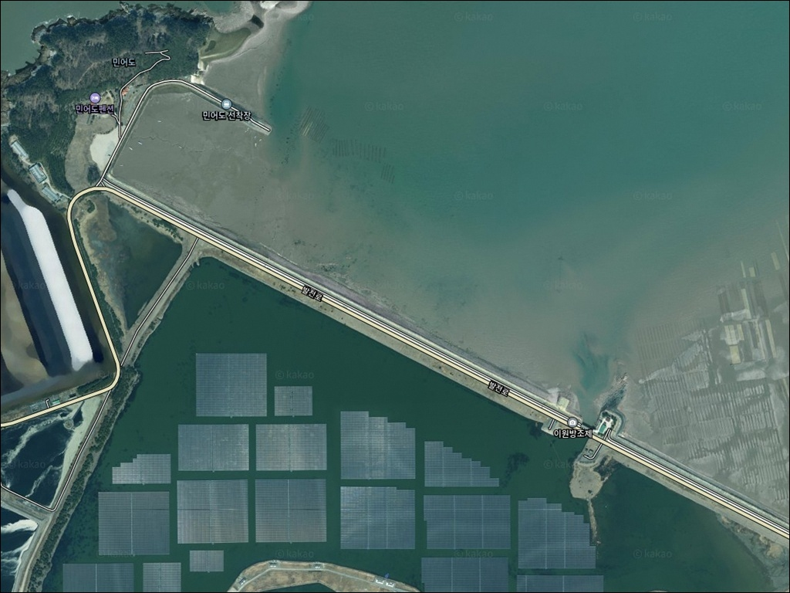
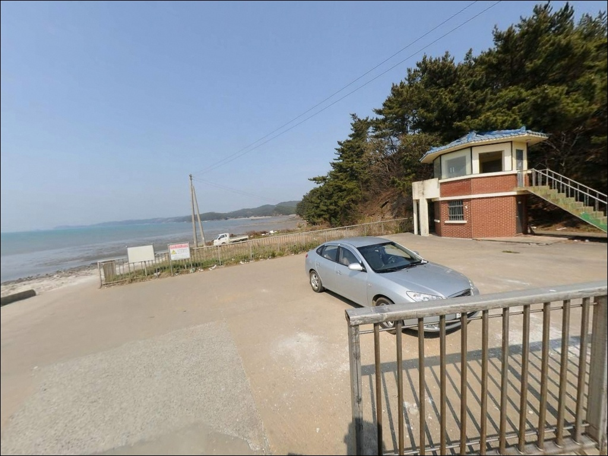
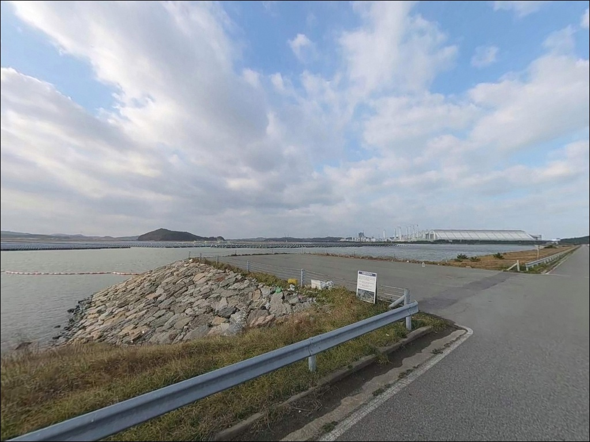
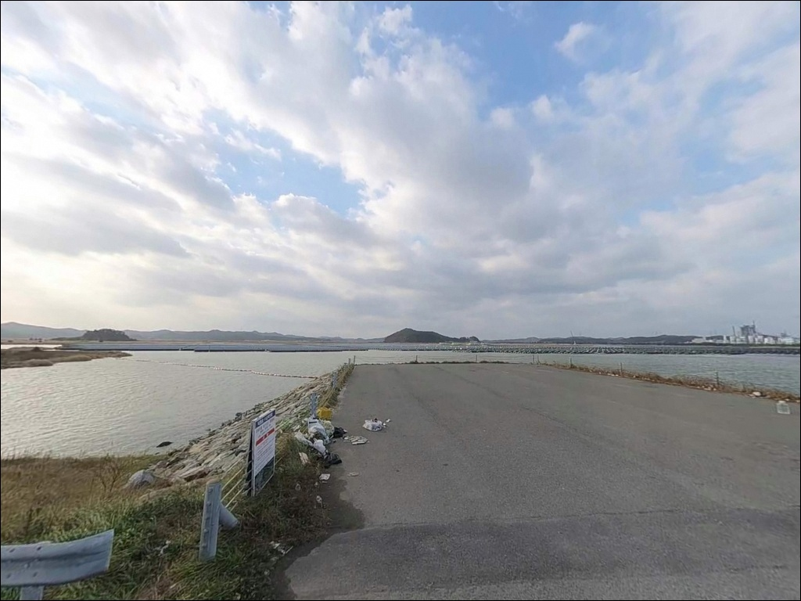
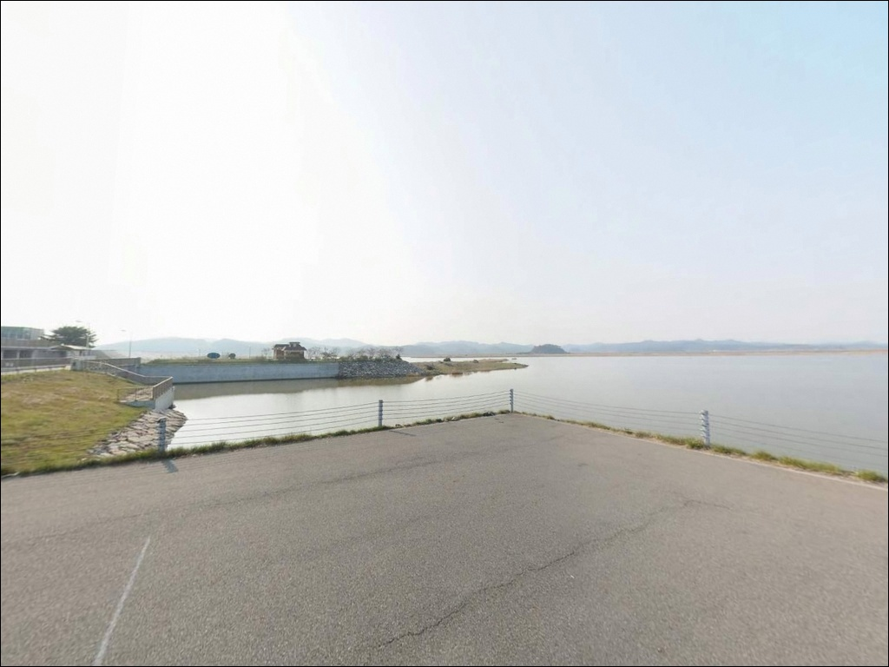
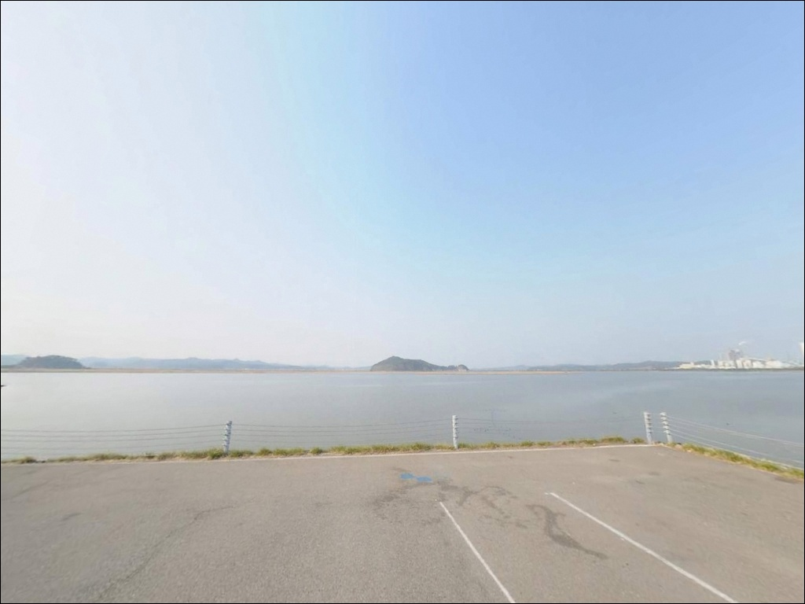
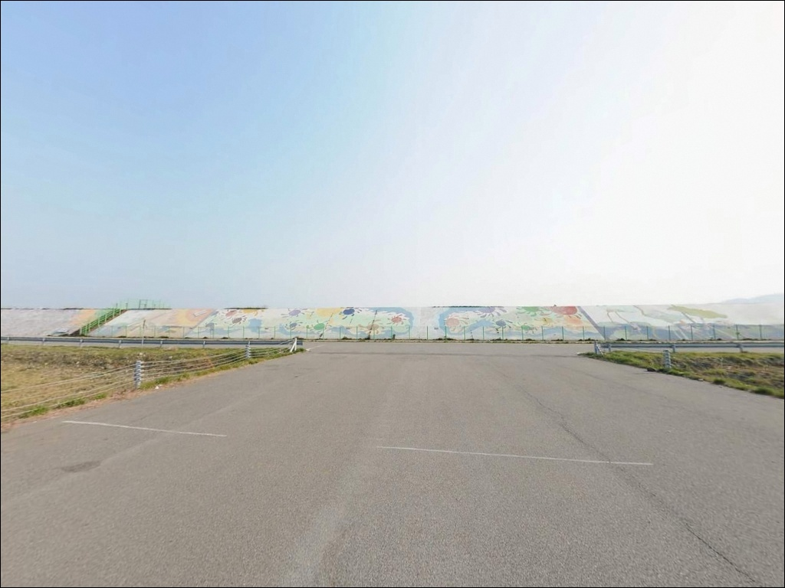
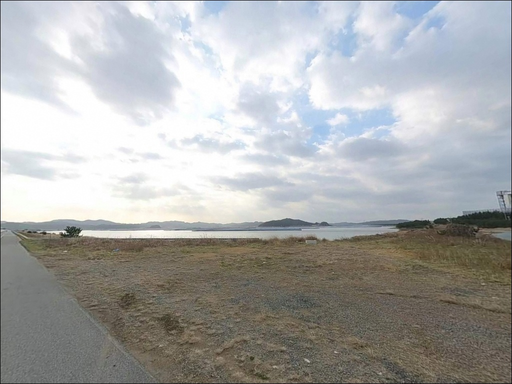
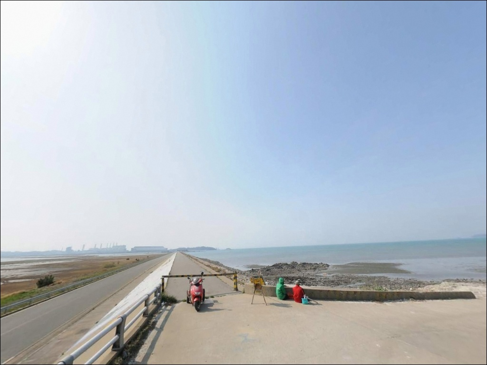

이원방조제, 충남 태안군 탁 트인 차박, 낚시 명소


포인트 안내
이원방조제
충남 태안군 이원면 포지리 1288
이원방조제에서 가장 많이 하는 실수는
물때를 확인하지 않고 진입하는 것입니다.
서해안 특성상 간조 시에는 방조제 외측 수심이 급격히 낮아지고,
봉돌이 갯벌에 박혀버려
어떤 채비를 써도 운용이 어려운 상황이 됩니다.
이 글은 이원방조제의 낚시 여건과 진입 동선,
물때 기준, 차박 체류 조건에 집중하며,
조황 단정이나 특정 어종 보장은 다루지 않습니다.
이원방조제는 이원면 관리에서
원북면 방갈리를 잇는 약 2.7km 직선 방조제입니다.
방조제 위 왕복 2차선 도로가 주요 진입로이자
낚시 발판을 겸하는 구조이며,
양측으로 서해 외측과 수로·내해가 나뉩니다.
방조제 벽면에는 에버그린 태안 희망벽화가 조성되어 있어
태안군 공식 관광 안내에도 등재된 명소이기도 합니다.

1. 직선 도로형 진입, 주차 자리 확인이 먼저입니다
이원방조제는 방조제 위로 왕복 2차선 도로가 나 있어
승용차·SUV 기준 진입 자체에 어려움이 없습니다.
별도의 비포장 구간이나 급경사 없이
방조제 전 구간에 접근할 수 있고,
낚시 자리까지 이동 거리도 짧아
기동성 있는 이동형 탐색 낚시에 유리한 구조입니다.
주차는 방조제 초입 공터가 기본 거점이며,
10대 미만 수준을 수용하는 규모입니다.
중간 구간에도 갓길 형태의 임시 주차 공간이 있으나,
도로 통행에 지장이 없는 위치인지
현장에서 직접 확인해야 합니다.
주차 후에는 비상등과 안전 삼각대를 활용해
다른 차량이 쉽게 인지할 수 있게 하는 것이
도로변 주차의 기본 매너입니다.
방조제 길이가 길기 때문에
진입 전에 목표 구간을 먼저 정해두고 이동하는 편이 효율적입니다.
회차는 양 끝단과 중간 공터 구간에서 가능한 편이나,
중간부에서 대형 차량이 교행하기 어려운 구간이 있을 수 있어
되돌아 나올 여지를 미리 감안하는 것이 좋습니다.

2. 바람 노출이 강한 환경, 짧은 체류 기준으로 접근하세요
이원방조제 일대는 수로·내해·갯벌이 양측에 펼쳐진
해안 방조제로, 민가 밀집도가 낮아 야간 소음은 적습니다.
하지만 방조제 상부 도로 위에 차량을 대는 구조라
편안하게 자리를 잡기보다 도로 상황을 의식하면서
머무는 형태가 현실적입니다.
장박·확장형 차박보다 낚시 후 짧게 쉬는 패턴이
이 포인트 성격에 잘 맞습니다.
직선 구조에 양측이 열린 지형이라
바람 노출이 강한 편입니다.
기상 조건이 좋지 않은 날에는
체류 자체가 불편해질 수 있고,
방조제 중간부는 가로등이 드문 구간이 있을 수 있어
개인 조명을 반드시 챙겨야 합니다.
야간에는 동행 출조를 기본으로 생각하는 편이 안전합니다.
이원반도 일부는 태안해안국립공원 구역에
포함될 수 있습니다.
국립공원 구역 내에서는 지정된 장소 외
야영·취사가 원칙적으로 허용되지 않으므로,
출발 전 태안해안국립공원 사무소에
구역 포함 여부를 확인해 두는 것이 먼저입니다.


3. 방조제 현장에는 시설이 없습니다, 이원면에서 미리 준비하세요
이원방조제 현장에서 확인된 공식 편의시설 정보는 없습니다.
화장실, 식수, 쓰레기 처리 등 기본 인프라를
현장에서 기대하기 어려운 포인트이므로,
완전 자급 체제로 진입하는 것이 기본 준비 방식입니다.
식수·얼음·낚시 소품·연료 모두 출발 전에 갖춰야 합니다.
이원면 소재지 방향으로 차량 5~10분 거리에
편의점이 있는 것으로 알려져 있어,
방문 전 물품 조달을 먼저 마치고 진입하는 것이 효율적입니다.
방조제에서 다시 이동하기가 번거로운 구간이라
초행이라면 특히 사전 준비를
넉넉하게 챙겨두는 편이 좋습니다.

4. 물때와 기상, 이원방조제 출조의 두 가지 핵심 판단 기준
이원방조제 방문에서 가장 먼저 확인해야 할 것은 물때입니다.
서해안 특성상 조수 간만의 차가 크기 때문에
간조 시에는 방조제 외측 수심이 얕아지거나
갯벌이 드러나는 구간이 생깁니다.
바다타임에서 포지리 기준 물때를 확인하고,
만조 전후 2~3시간 구간을 노려
출발 시각을 맞추는 것이 기본 전략입니다.
기상 예보도 출발 당일 다시 한번 확인하는 것이 좋습니다.
방조제는 양측이 열린 노출형 구조라
바람 세기가 채비 운용에 직접 영향을 미칩니다.
풍랑주의보나 강풍 예보가 있는 날에는
채비 컨트롤이 어려워질 뿐 아니라
안전 문제도 생길 수 있어 출조를 피하는 편이 낫습니다.
방조제 석축은 미끄러울 수 있는 구간이 있고
난간이 없는 곳도 있습니다.
구명조끼와 미끄럼 방지 신발은 기본 준비사항이며,
야간 입장 시에는 헤드랜턴을 반드시 챙겨야 합니다.
바닥이 사니질과 모래 혼합 구조라
밑걸림이 발생하는 경우가 있으므로
여분 채비는 넉넉하게 준비하는 것이 좋습니다.

5. 수문 구간이 핵심, 조류 흐름이 살아 있는 자리를 먼저 보세요
이원방조제는 외측이 서해, 내측이 수로·내해로 나뉘는 구조입니다.
방조제 길이가 길고 직선형이라 어느 구간에서나
캐스팅이 가능하지만, 낚시 여건은 구간마다 차이가 있습니다.
방조제 중간에 위치한 수문(배수갑문) 구간은
조류가 집중되는 지점으로,
흐름이 유지되는 구간 특성상 어종 활성도가
상대적으로 높아지는 경향이 있는 자리입니다.
만조 시에는 방조제 전 구간 외측으로
수심이 확보되어 원투 자리로 활용하기 좋습니다.
간조 쪽으로 기울수록 수심이 줄어들기 때문에,
수문 주변처럼 물길이 모이는 구간이
간조 타이밍에도 낚시가 가능한 구조를 유지합니다.
외측 바닥은 사니질·모래 혼합 구조로 보이며,
바닥 공략형 채비를 운용하기에 무난한 조건입니다.
서해안 방조제 패턴상 가을 이후에도
어종 활성도가 유지되는 경우가 있다는 경험담이 있습니다.
이는 참고 수준으로만 받아들이시고,
가기 전에 최신 조황은 꼭 검색해 보시기 바랍니다.

6. 원투·루어·찌낚시 겸용이 가능한 직선 방조제 구조입니다
이원방조제에서 가장 기본이 되는 낚시는 원투낚시입니다.
넓고 평평한 발판 덕분에 캐스팅 공간이 충분하고,
여러 명이 동시에 자리를 잡아도 채비 간섭이 덜한 편입니다.
만조 전후 수심이 확보된 타이밍에
외측 방향으로 멀리 던져 바닥을 천천히 탐색하는 방식이
이 포인트 구조와 잘 맞습니다.
도다리, 붕장어, 광어 등
바닥 어종을 기대해 볼 수 있는 지형입니다.
루어낚시는 만조 전후 시간대에
석축 가장자리를 따라 공략하는 방식이 어울립니다.
광어·우럭 대상 지그헤드 리그나 워킹루어를 활용한
바닥층 탐색이 기본이며,
가을 시즌에는 삼치 대상 메탈지그 원거리 캐스팅도
직선 방조제 구조를 활용해 시도해볼 만합니다.
장거리 캐스팅에 유리한 조건이라
루어낚시를 즐기는 낚시인에게 공략해볼 만한 포인트입니다.
방조제 내측 또는 수문 주변 잔잔한 구간에서는
찌낚시도 가능합니다.
우럭이나 노래미를 노리는 석축 붙임 공략이 기본이며,
조류가 약해지는 타이밍에 내측 수로 방향으로
채비를 내리는 방식이 어울립니다.
원투·루어·찌낚시를 겸하며
방조제 구간을 이동하며 탐색하는 것이
이 포인트를 효율적으로 공략하는 방식입니다.

7. 방조제 여건이 안 맞으면 민어도방파제나 만대항으로 이동하세요
이원방조제 낚시가 기대에 못 미칠 경우
가장 먼저 이동할 대안은 민어도방파제입니다.
원북면 방갈리 방향에 자리한 이 포인트는
방파제와 석축 갯바위가 함께 있는 복합 구조로,
방조제보다 낚시 포인트 다양성이 높은 편입니다.
주차 후 바로 캐스팅이 가능한 구조이기도 해서,
이원방조제와 세트로 묶어 탐색하는 경우도 많습니다.
만대항은 이원면 권역에서 대표적인 항구 포인트입니다.
방파제와 선착장 구조가 함께 갖춰져 있어
단조로운 방조제 구간과 달리
다양한 자리를 탐색할 수 있습니다.
조황 정보도 비교적 활발하게 공유되는 편이어서
방문 전 검색으로 최신 상황을 확인하기가 수월합니다.
이원반도 북쪽으로 이동하면
학암포 해수욕장 인근을 탐색해볼 수 있습니다.
같은 이원반도·원북면 해안선 권역으로,
방조제와 다른 지형 조건에서 낚시가 가능한 후보지입니다.
차박 여건이 방조제보다
나을 가능성이 있는 곳이기도 합니다.

물때와 수문 구간을 이해하면
이원방조제가 달라 보입니다
원투낚시나 루어낚시를 편한 발판에서 즐기고 싶은 낚시인에게
이원방조제는 선택지가 될 만한 포인트입니다.
방조제 전 구간이 캐스팅 공간으로 활용 가능하고,
진입 자체가 쉬워 이동형 탐색 낚시에 적합합니다.
다만 물때를 확인하지 않고 도착하면
수심이 확보되지 않아 낚시 자체가 어려워지는 구간이 생기므로,
만조 전후 타이밍을 먼저 잡고
출발 시각을 맞추는 준비가 선행되어야 합니다.
편의시설을 기대하거나 차량 주변을 넓게 쓰고 싶은
차박 여행자에게는 다소 불편할 수 있는 포인트입니다.
바람 노출이 강하고 도로변 갓길 형태라
장박보다 짧은 체류가 어울리며,
민어도방파제 쪽이 차박 여건이 상대적으로 나은 편입니다.
태안해안국립공원 구역 포함 여부도
출발 전에 반드시 확인해 두어야 합니다.
물때가 맞고 바람이 잦아드는 타이밍에
수문 구간 앞에 자리를 잡으면,
긴 방조제의 조류 흐름이 비로소
낚시 포인트로 느껴지기 시작하는 곳입니다.